Теми дизайн-системи — порівняння
Порівняння тем. Lighthouse — мобільний профіль (поріг продуктивності 85). Перший екран і повна сторінка на 375 і 1440 px.
Смерека pine
глибокий зелений, беж і мідь — ліс, дерево, вогонь у каміні
Cormorant Garamond + Manrope
FIRST 0.9 s · LARGEST 3.8 s · TOTAL 40 ms · CUMULATIVE 0.023
✓ без помилок консолі (CSP) і горизонтальної прокрутки
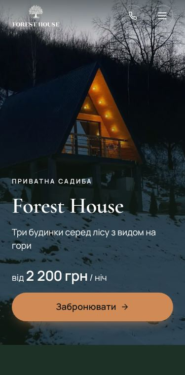
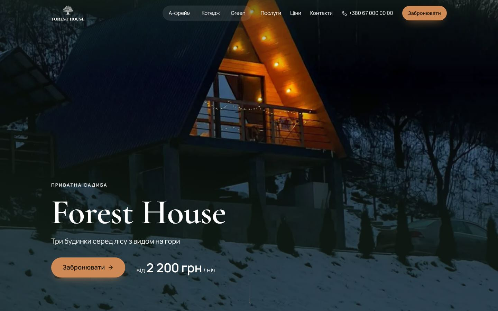
Повна сторінка


Графіт graphite
графіт, молочний і золото — стримано, по-міському дорого
Playfair Display + Inter
FIRST 1.2 s · LARGEST 3.8 s · TOTAL 90 ms · CUMULATIVE 0.013
✓ без помилок консолі (CSP) і горизонтальної прокрутки
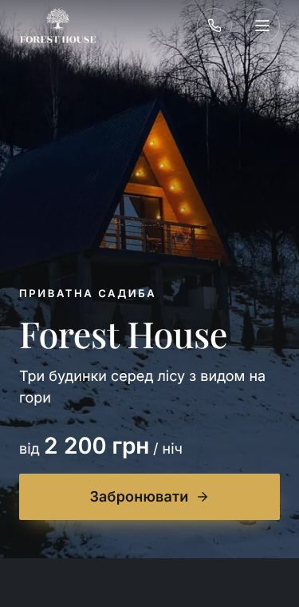
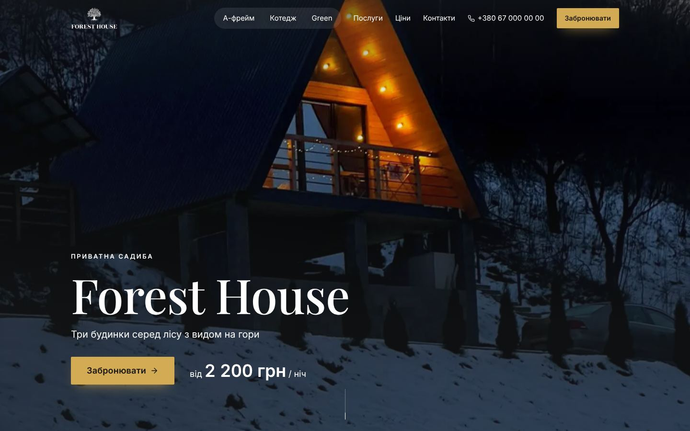
Повна сторінка


Теракота terracotta
білий, камінь і теракота — світло, глина, південне сонце
Lora + Golos Text
FIRST 0.9 s · LARGEST 3.6 s · TOTAL 0 ms · CUMULATIVE 0.013
✓ без помилок консолі (CSP) і горизонтальної прокрутки
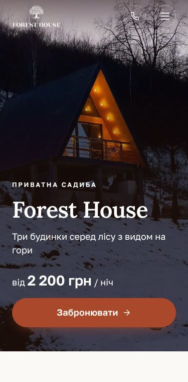
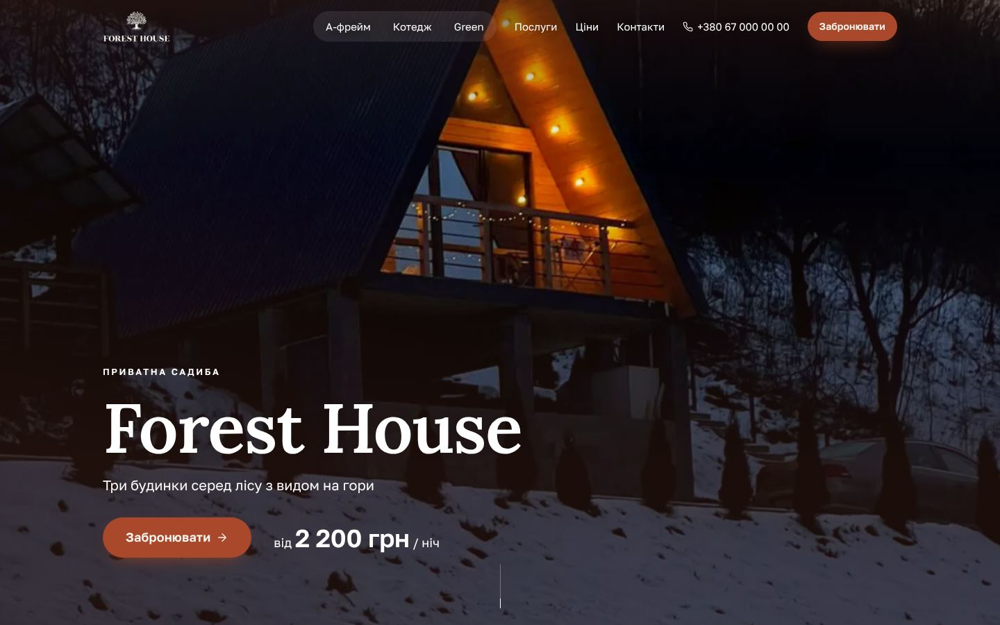
Повна сторінка


Ніч night
нічне небо, пісок і лайм — сучасно, сміливо, для глемпінгу
Unbounded + Onest
FIRST 0.9 s · LARGEST 3.6 s · TOTAL 40 ms · CUMULATIVE 0.011
✓ без помилок консолі (CSP) і горизонтальної прокрутки
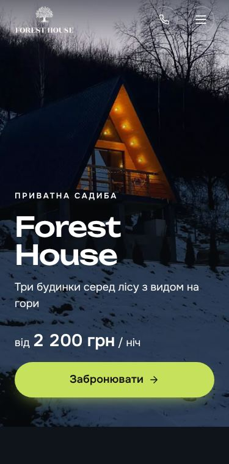
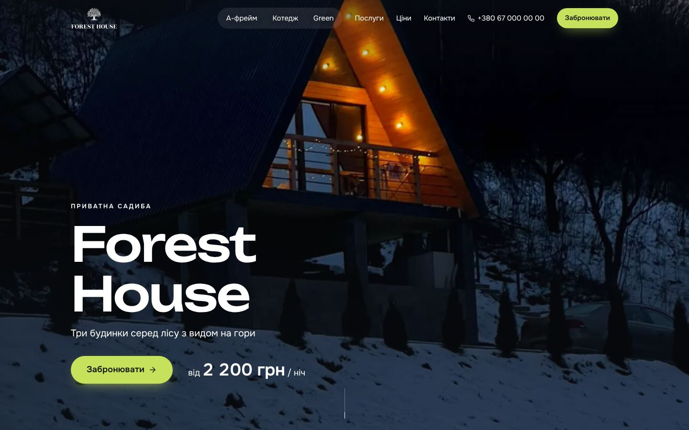
Повна сторінка


Льон linen
льон, сланцево-зелений і бронза — тепла класика садиби
Prata + Montserrat
FIRST 0.9 s · LARGEST 3.8 s · TOTAL 40 ms · CUMULATIVE 0
✓ без помилок консолі (CSP) і горизонтальної прокрутки
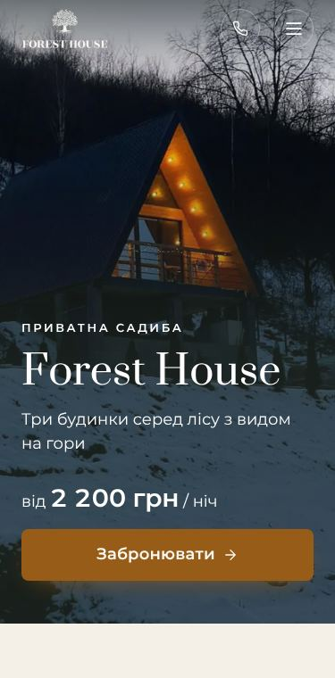
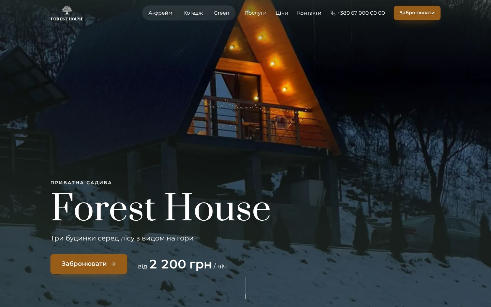
Повна сторінка


Озеро lake
туман над водою, глибока бірюза й корал — свіжо й спокійно
Literata + Manrope
FIRST 0.9 s · LARGEST 3.7 s · TOTAL 40 ms · CUMULATIVE 0.023
✓ без помилок консолі (CSP) і горизонтальної прокрутки
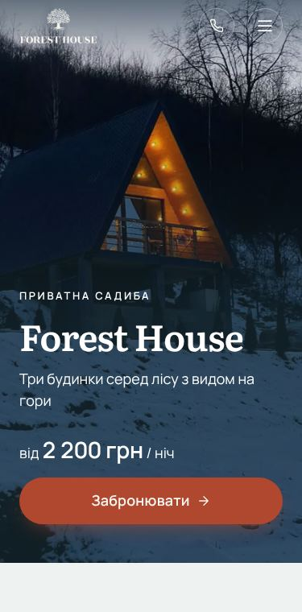
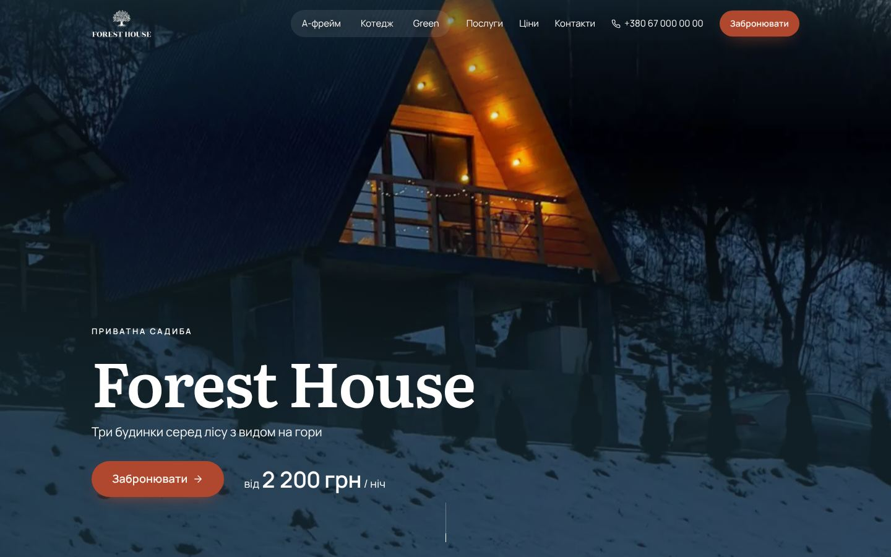
Повна сторінка


Береза birch
білий, шавлія й лісовий зелений — чисто, скандинавськи
Forum + Commissioner
FIRST 0.9 s · LARGEST 3.8 s · TOTAL 40 ms · CUMULATIVE 0.013
✓ без помилок консолі (CSP) і горизонтальної прокрутки
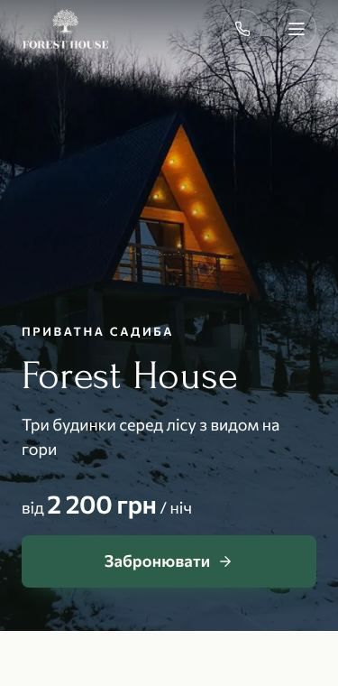
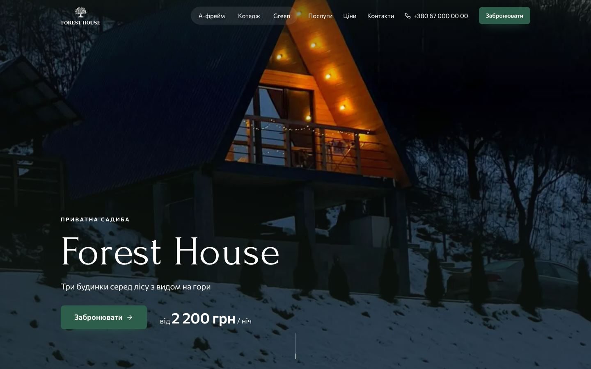
Повна сторінка


Жар ember
вугілля, темне дерево й жар — баня, чан, вечір біля вогню
Yeseva One + PT Sans
FIRST 0.9 s · LARGEST 4.1 s · TOTAL 20 ms · CUMULATIVE 0.023
✓ без помилок консолі (CSP) і горизонтальної прокрутки
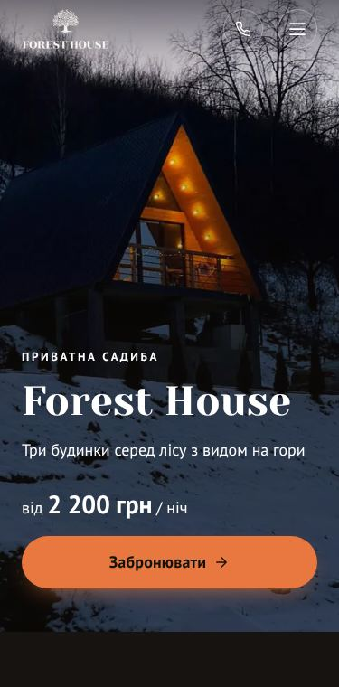
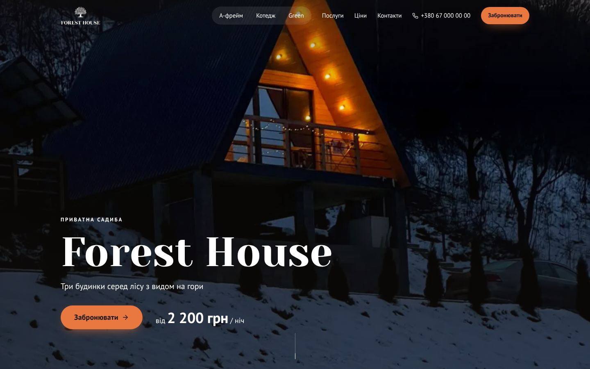
Повна сторінка